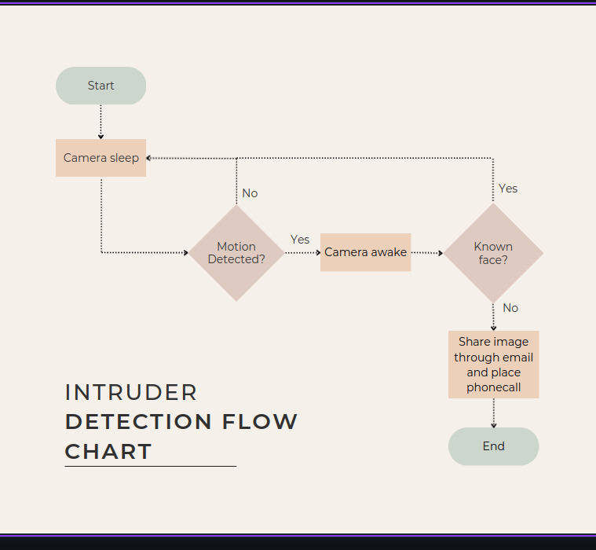
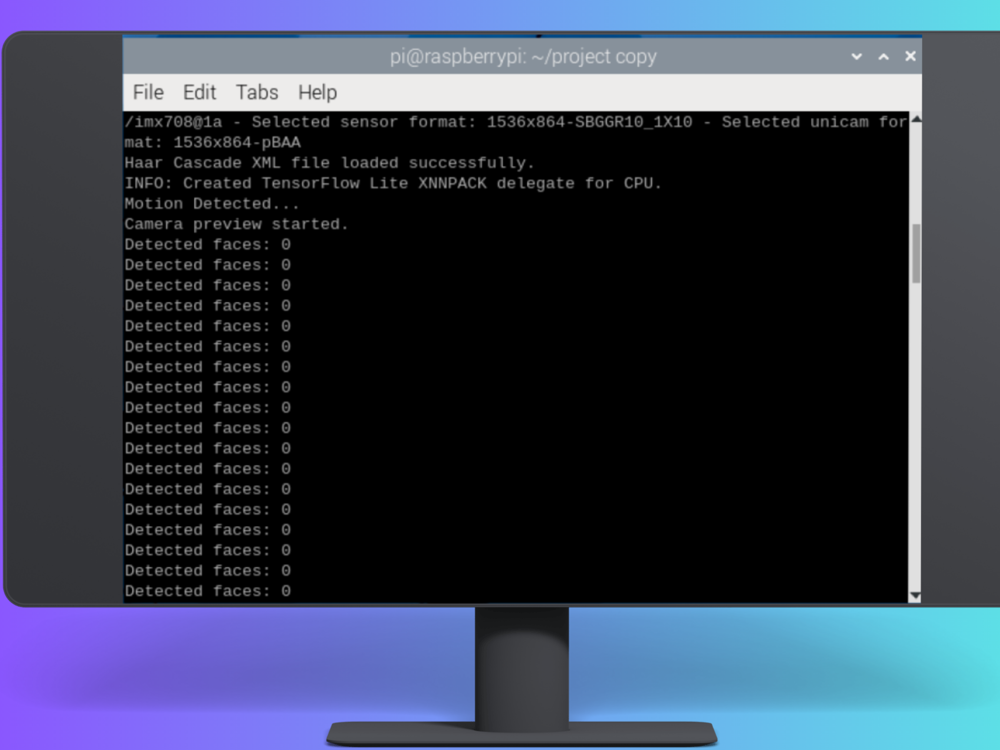
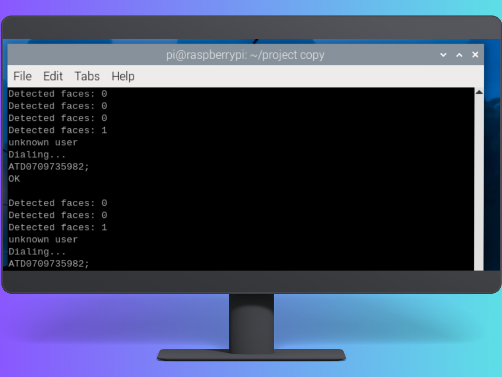

The Dedicated Project Team Members
| NAME | STUDENT NO. | REG. NO. |
|---|---|---|
| SSALI JOSHUA | 2300717345 | 23/U/17345/EVE |
| OKWII YAKUB | 2300726804 | 23/U/26804/EVE |
| KATSWAMBA WILFRED | 2300727905 | 23/U/27905/EVE |
| NAKALYA ROSE | 207006808 | 07/U/5763/PS |
| ISHAMI KWISANGA ANDRIC | 2300722981 | 23/X/22981/EVE |
The Intruder Detection System (IDS) is designed to significantly enhance security in both homes and workplaces. Unlike ordinary CCTV cameras, this advanced system offers capabilities that go beyond simple surveillance. It not only monitors and records activities but also actively detects unauthorized access and potential security breaches in real-time. The system can trigger alerts, notify authorities, and even initiate automated security protocols to protect the premises effectively. For a comprehensive overview of the project's features, functionalities, and implementation details, please refer to the documentation provided below.
Table of Content
Abstract
Intruder Detection Systems (IDS) have become a crucial element in ensuring the security of homes and offices. These systems are designed to identify and respond to unauthorized access and potential threats. However, existing IDS techniques are not entirely foolproof and often result in false alarms, particularly in anomaly-based systems. This report presents the development and implementation of an advanced anti-intrusion system aimed at enhancing home security.
The proposed system is equipped with a camera that captures real-time images of individuals entering a monitored area. These images are compared against a pre-existing database of authorized personnel using advanced image recognition made with machine learning. If the system detects an unfamiliar face, it promptly generates an email alert with intruder’s photo and also initiates an automated phone call to notify the homeowner of the potential intrusion. This dual-layer approach ensures rapid detection and response, significantly improving the security and safety of residential properties.
Introduction
Welcome to the introduction of our Intruder Detection System, a smart solution designed to improve security in homes and workplaces. In this document, we will talk about the problems that this system aims to solve, the main goals of the project, and the key features needed for it to work effectively. This system goes beyond what regular CCTV cameras can do, offering advanced protection to keep your property safe
Problem Statement
Home and property security is a significant concern in Uganda's suburbs and across Africa, where conventional security systems relying on simple alarms and CCTV cameras often fall short. These systems fail to provide immediate and actionable alerts to property owners and authorities, especially during night time intrusions when immediate help is crucial. Many residents suffer from insecurity, facing attacks by armed thieves during the early hours, with neighbors often unaware until it's too late. Although CCTV cameras capture intrusions, the intruders are usually long gone before the recordings are reviewed, leading to loss of lives, injuries, assaults, and stolen possessions. This situation underscores the need for advanced security solutions that can detect unauthorized entry, promptly alert property owners and authorities, and provide real-time visual evidence of intrusions.
Project Goals
Develop Real-Time Detection: To create a system that accurately identifies unauthorized individuals entering a property in real-time using advanced image recognition technologies.
Implement Immediate Alert Mechanisms: To ensure the system promptly notifies homeowners and local authorities through automated phone calls or notifications when an intrusion is detected.
Enhance Response Times: Design the system to enable rapid detection and response to intrusions, particularly during night time, to minimize harm and property damage.
Provide Continuous Visual Evidence: Incorporate continuous recording and storage capabilities to capture real-time visual evidence of intrusions for immediate review and post-event analysis.
Create a User Management Interface: Develop an admin interface to manage authorized personnel, review system alerts, and perform necessary security checks and updates.
Functional Requirements
Allows Motion Detection and Triggering: The PIR Sensor Allows detection of Motion in the premises and it triggers the Camera Module to take Pictures of what has caused the Motion.
Allows Image Comparison and Analysis: Allows comparison of the captured photo with existing reference photos using a teachable machine and analyze for differences to identify potential intruders.
Allows Email Alerting: The system sends an email alert upon detecting an intruder, the alert includes the photo of the intruder in the email notification.
Allows Emergency Notification: The system uses a GSM module to initiate a phone call to the homeowners and/or authorities.
Product Design
Diagrams Showing the 3D Circuit Drawing and Schematic Drawing of Intruder Detection System

3D Circuit Drawing

Schematic Drawing
Raspberry Pi 4 Model B (Microcontroller)/ Main Controller: Serves as the central unit for processing data from the sensors and managing system operations.
PIR Motion Sensor: VCC Pin is Connected to the 5V pin of the Raspberry Pi 4 B, Ground Pin Connected to the common ground on the breadboard, shared with the GSM module and Raspberry Pi 4 B and OUTPUT Pin Connected to GPIO2 pin on the Raspberry Pi 4 B.
Pi Camera: Connector: Attached directly to the dedicated camera slot on the Raspberry Pi 4 B.
GSM Module: RX Pin is Connected to GPIO14 (TX) on the Raspberry Pi 4 Model B, TX Pin is Connected to GPIO15 (RX) on the Raspberry Pi 4 Model B and VCC Pin is Powered by a 3.8V battery.
Flow Chart
IDS Flow Chart
Initial Detection: Motion Detected by PIR Sensor The process begins with a Passive Infrared (PIR) sensor, which detects motion in the monitored area. When motion is detected, the system proceeds to the next step.
Camera Module Activation: Upon motion detection, the system triggers the camera module to open and begin monitoring the area. This step is crucial for capturing visual data of any detected motion.
Face Detection:The camera module attempts to detect a face within the captured footage. This step is vital for distinguishing between human intruders and other sources of motion (such as animals or environmental factors).
Snapshot Capture and Facial Recognition:If a face is detected, the system takes snapshots and sends them to a facial recognition model for analysis. The facial recognition model compares the captured face against a database of trained faces to determine if the face is known.
Known Face Detected: Yes, if the face is recognized and known (e.g., a resident or authorized person), the system does not take further action, ensuring normal operations are not disrupted. but If the face is not recognized, the system proceeds to the alert stage.
Alert Mechanism Activation: The system activates the GSM module to initiate a phone call to the home owner or security personnel, notifying them of a potential intruder. Additionally, the system sends an email alert containing snapshots of the unidentified face to the homeowner or security team, providing visual evidence of the intrusion.
Product Functionality and Screenshots

1. Motion Detection and Triggering
The IDS detects motion using the PIR sensor. Upon detecting motion, it triggers the camera to capture a photo of the
intruder.

2. Image Comparison and Analysis
Using a teachable machine model, the IDS compares the captured photo with existing reference photos. It analyzes
differences to identify potential intruders based on visual recognition.
3. Alerting Mechanisms
Upon identifying an intruder, the IDS sends an email alert. The alert includes the captured photo of the intruder for immediate visual verification.
4. Emergency Notification
In critical situations, the IDS initiates a phone call to the homeowner or authorities using the GSM module. This
immediate notification ensures prompt response to potential security threats.
Limitations/Challenges Encountered During the Project
Limitations Explained
1. Access to Up-to-Date Information:
Outdated Resources: We encountered substantial challenges in accessing current and relevant information. Many online
resources provided guidance using outdated libraries and technologies. This lack of up-to-date information led to
inefficiencies and setbacks in our project.
Resource Misallocation: Due to reliance on outdated resources, we invested in equipment that was ultimately unnecessary
for our project, such as the Raspberry Pi Zero W and a poor-quality OV7670 camera. None of these could handle our
project requirements. This misallocation of resources consumed both time and resources.
2. Equipment and Hardware Issues:
Equipment Choices: Based on outdated recommendations, we spent considerable time and effort searching for an
Arduino Nano 33 BLE Sense, mistakenly believing it was the most powerful board for our needs. We later discovered that a
Raspberry Pi 4 B was more appropriate for our requirements.
Storage and Handling: We faced difficulties in storing our equipment properly, which led to the damage of one of our
cameras. Fortunately, Engineer Bainomugisha assisted us by providing a replacement camera.
3. Training the Machine Learning Model:
Background Interference: Our machine learning model learned extensively from the background elements in the images,
leading to significant discrepancies in confidence rates. This background noise made it difficult for the model to
accurately distinguish between faces and the background.
Meet the Project Team Members
SSALI JOSHUA
Joshua contributed significantly in developing the machine learning component of the project and designing the project
poster, effectively presenting the project’s core ideas and results visually.
OKWII YAKUB
Yakub played a crucial role in developing the machine learning aspect and creating the project website, ensuring both
technical functionality and an accessible online presence
KATSWAMBA WILFRED
Wilfred was responsible for setting up the Raspberry Pi and writing the introductory section of the report, laying a
solid foundation for the project’s technical infrastructure and documentation
NAKALYA ROSE
Rose focused on integrating the GSM module and contributed to the overall project design, enhancing both the technical
communication capabilities and the visual attractiveness.
ISHAMI KWISANGA ANDRIC
Andric worked on setting up the Raspberry Pi, implementing the PIR motion sensor, and contributing to the project
design, ensuring robust hardware integration and effective design implementation.
Give Us Feedback
Thank you for visiting our website. We appreciate your time and interest in our project. To help us improve, please take a moment to answer the feedback questions below according to your level of satisfaction. Your feedback is invaluable and will greatly assist us in enhancing our services and offerings.
We look forward to Empowering your Security